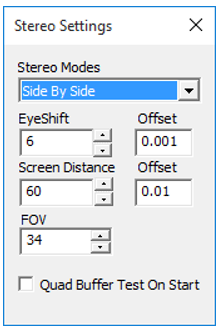

Stereo Settings
VCollab Pro users can modify eye shift value for stereo mode using Stereo Settings found in the Edit Menu.

The various controls and options available under Stereo Settings are explained below.
Stereo Modes Sets specified stereo mode Eye Shift Approximate distance between viewers eye ball in centimeters. Screen Distance Approximate distance between viewer and screen in centimeters. FOV Viewing angle 50 to 70 degree is recommended. Quad Buffer Test On Start If checked, before the start of the next session of VCollab Pro, GPU will be tested for Quad Buffer Support. Quad Buffer will be listed , along with other stereo modes if GPU supports Quad Buffer.
Note:
This version of VCollab Pro supports only single channel stereo. The 3D DLP (Digital Light Processing) projectors that do not support single channel stereo, expect left and right images on two independent windows, which are then connected to two output cables from GPU. The current version of VCollab Pro renders left and right images in the same window.
Stereo Modes
Active
- Quad Buffer
Passive
- Side By Side (Left-Right)
- Top-Bottom
- Anaglyph

Anaglyph Passive stereo that requires red and cyan glasses for red and cyan glasses for Side By Side Passive Stereo in Left Right format. Passive stereo glasses and 3D monitor/3D TV are required for viewing.. Top - Bottom Passive Stereo in Top-Bottom format. Passive stereo glasses and 3D monitor/3D TV are required for viewing. Quad Buffer Active Stereo. Requires OpenGL Quad buffer supported graphics card, active stereo glasses with emitter. Also requires 120hz refresh rate supported display system (monitor/projector)
Steps to edit Eye Shift values
- Click Edit | Stereo Settings to open Stereo Settings dialog box.
- Increase or decrease the eye shift values as needed
Stereo Support in Desktop
Quad Buffer Side by Side / Top-Bottom Anaglyph Special GPU Required with quad buffer support Not required Not required Refresh Rate of Monitor 120Hz 60Hz(regular) 60Hz(regular) Eyeware LCD Shutter Glass Polarized Glass Red-Blue/Red- Green/Red-Cya n Emitter Required Not Required Not Required Visual Quality High, Used in engineering solutions Medium, Used in entertainment Color loss, Used in paper medium Resolution in Full HD Monitor Outputs in Full HD resolution Half resolution is lost Full resolution Filter in monitor No filter is needed Polarized filter comes along with monitor No filter needed Minimum cost for Hardware ~$1000 ~$500 ~$1
Stereo Support in 3D TV
Some of the 3D TVs support stereo in active mode and some in passive mode.
VCollab Pro works on both, using Top-Bottom or Left-Right (side by side) mode. No Quad buffer GPU is needed in laptop or desktop.
UHD is recommended. Even if it loses half resolution, 2K in each frame is good enough to get good visualization
Active Stereo TV Passive Stereo TV Eyeware LCD shutter glass Polarized glass VCollab Pro Stereo Mode T-B / L-R T-B /L-R Quad buffer Stereo card in Laptop/Desktop Not required Not Required Screen Sharing through WiDi Will support Will Support Display connected thru HDMI Will support Will Support
Stereo Support in Projectors
Traditional Projectors with external emitter
Built in Emitters
Duel Projectors
External Built In Dual Projector Refresh Rate Required 120 Hz 120 Hz 60 Hz VCollab Pro Stereo Mode Quad Buffer Quad Buffer/L-R/T- B L-R/T-B Emitter Need to be purchased Built In Can support passive using polarized filters Eyeware Shutter Glass Shutter Glass Polarized Glass